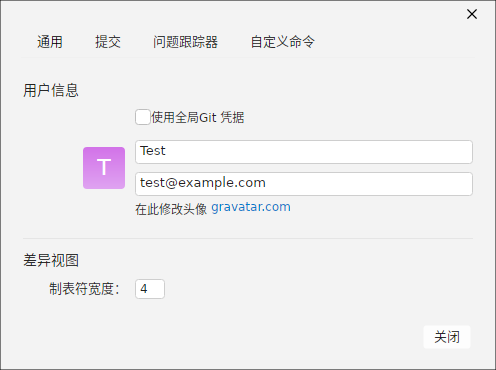

与「偏好设置」管理全局配置不同，「仓库设置」针对当前打开的单个仓库生效。通过仓库工具栏的「仓库设置」打开，窗口顶部以 4 个标签页组织，改动仅影响该仓库，不会被其他仓库共享。
四个设置标签页
| 标签页 | 说明 |
|---|---|
| 通用（General） | 本仓库的用户标识与差异视图外观 |
| 提交（Commit） | 本仓库的提交行为与提交消息相关项 |
| 问题跟踪器（Issue Tracker） | 绑定第三方问题跟踪系统的集成 |
| 自定义命令（Custom Commands） | 为本仓库单独维护的自定义 Git 命令菜单 |

通用页（General）
「通用」页集中管理本仓库的提交身份与差异外观，其配置只写回该仓库的本地 Git 配置，不会污染全局：
- 用户信息：
- 「使用全局 Git 凭据」复选框：勾选后沿用全局 Git 用户配置；取消勾选则为本仓库单独填写作者。
- 用户名 / 邮箱字段：未勾选全局凭据时可独立设置，用于决定该仓库提交的 author/committer。
- 头像：根据邮箱显示 Gravatar 头像，「在此修改头像」链接前往
gravatar.com。
- 差异视图：
- 制表符宽度：Diff 编辑器中 Tab 符按几个空格渲染（默认 4），影响缩进一致性差文件的比对可读性。
小贴士：仓库级配置优先级高于全局。若在一个「工作用」仓库里需要与个人全局身份不同的提交作者，取消勾选「使用全局 Git 凭据」单独填写即可，既不影响其他仓库，也不改动
~/.gitconfig。其余标签页
- 提交：设置本仓库提交时的默认行为（如是否启用消息模板、Diff 上下略等于提交相关的呈现偏好）。
- 问题跟踪器：为分支/提交的引用提供「关联 #issue」之类的外部系统集成能力。
- 自定义命令：维护仅本仓库可见的自定义命令条目，便于按团队规范预置常用操作。
窗口底部为「关闭」按钮。各选项在改动后即生效，并写回该仓库的本地 Git 配置。